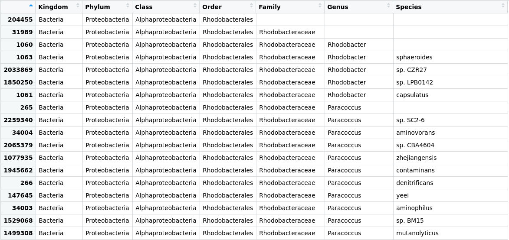

Exploring Taxonomy with R
Last updated on 2025-04-06 | Edit this page
Overview
Questions
- How can I use my taxonomic assignment results to analyze?
Objectives
- Comprehend which libraries are required for analysis of the taxonomy of metagenomes.
- Create and manage a Phyloseq object.
Creating lineage and rank tables
In this episode, we will use RStudio to analyze our microbial samples. You do not have to install anything, you already have an instance on the cloud ready to be used.
Packages like Qiime2, MEGAN, Vegan, or Phyloseq in R allow us to
analyze diversity and abundance by manipulating taxonomic assignment
data. In this lesson, we will use Phyloseq. In order to do so, we need
to generate an abundance matrix from the Kraken output files. One
program widely used for this purpose is kraken-biom.
To do this, we could go to our now familiar Bash terminal, but RStudio has an integrated terminal that uses the same language as the one we learned in the Command-line lessons, so let us take advantage of it. Let us open RStudio and go to the Terminal tab in the bottom left panel.
Kraken-biom
Kraken-biom is a program that creates BIOM tables from the Kraken output.
In order to run Kraken-biom, we have to move to the folder where our taxonomic data files are located:
First, we will visualize the content of our directory by the
ls command.
OUTPUT
JC1A.kraken JC1A.report JP41.report JP4D.kraken JP4D.report mags_taxonomyThe kraken-biom program is installed inside our
metagenomics environment, so let us activate it.
Let us take a look at the different flags that
kraken-biom has:
OUTPUT
usage: kraken-biom [-h] [--max {D,P,C,O,F,G,S}] [--min {D,P,C,O,F,G,S}]
[-o OUTPUT_FP] [--otu_fp OTU_FP] [--fmt {hdf5,json,tsv}]
[--gzip] [--version] [-v]
kraken_reports [kraken_reports ...]
Create BIOM-format tables (http://biom-format.org) from Kraken output
(http://ccb.jhu.edu/software/kraken/).
.
.
.By a close look at the first output lines, it is noticeable that we
need a specific output from Kraken: the .reports.
With the following command, we will create a table in Biom format called
cuatroc.biom. We will include the two samples we have been
working with (JC1A and JP4D) and a third one
(JP41) to be able to perform specific analyses later
on.
If we inspect our folder, we will see that the
cuatroc.biom file has been created. This biom
object contains both the abundance and the ID (a number) of each
OTU.
With this result, we are ready to return to RStudio’s console and begin
to manipulate our taxonomic-data.
Command line prompts
Note that you can distinguish the Bash terminal from the R console by
looking at the prompt. In Bash is the $ sign, and in R is
the > sign.
Creating and manipulating Phyloseq objects
Load required packages
Phyloseq is a library with tools to analyze and plot your metagenomics samples’ taxonomic assignment and abundance information. Let us install phyloseq (This instruction might not work on specific versions of R) and other libraries required for its execution:
R
> if (!requireNamespace("BiocManager", quietly = TRUE))
install.packages("BiocManager")
> BiocManager::install("phyloseq") # Install phyloseq
> install.packages(c("RColorBrewer", "patchwork")) #install patchwork to chart publication-quality plots and readr to read rectangular datasets.Once the libraries are installed, we must make them available for this R session. Now load the libraries (a process needed every time we begin a new work session in R):
Creating the phyloseq object
First, we tell R in which directory we are working.
Let us proceed to create the phyloseq object with the
import_biom command:
Now, we can inspect the result by asking the class of the object created and doing a close inspection of some of its content:
OUTPUT
[1] "phyloseq"
attr("package")
[1] "phyloseq"The “class” command indicates that we already have our phyloseq object.
Exploring the taxonomic labels
Let us try to access the data that is stored inside our
merged_metagenomes object. Since a phyloseq object is a
special object in R, we need to use the operator @ to
explore the subsections of data inside merged_metagenomes.
If we type merged_metagenomes@, five options are displayed;
tax_table and otu_table are the ones we will
use. After writing merged_metagenomes@otu_table or
merged_metagenomes@tax_table, an option of
.Data will be the one chosen in both cases. Let us see what
is inside our tax_table:
 Figure 1. Table of the taxonomic
labels from our
Figure 1. Table of the taxonomic
labels from our merged_metagenomes object.
Here we can see that the tax_table inside our phyloseq
object stores all the taxonomic labels corresponding to each OTU.
Numbers in the row names of the table identify OTUs.
Next, let us get rid of some of the unnecessary characters in the OTUs id and put names to the taxonomic ranks:
To remove unnecessary characters in .Data (matrix), we
will use the command substring(). This command helps
extract or replace characters in a vector. To use the command, we have
to indicate the vector (x) followed by the first element to replace or
extract (first) and the last element to be replaced (last). For
instance: substring (x, first, last).
substring() is a “flexible” command, especially to select
characters of different lengths, as in our case. Therefore, it is not
necessary to indicate “last”, so it will take the last position of the
character by default. Since a matrix is an arrangement of vectors, we
can use this command. Each character in .Data is preceded
by three spaces occupied by a letter and two underscores, for example:
o__Rhodobacterales. In this case, “Rodobacterales” starts
at position 4 with an R. So, to remove the unnecessary characters, we
will use the following code:
R
> merged_metagenomes@tax_table@.Data <- substring(merged_metagenomes@tax_table@.Data, 4)
> colnames(merged_metagenomes@tax_table@.Data)<- c("Kingdom", "Phylum", "Class", "Order", "Family", "Genus", "Species")
 Figure 2. Table of the taxonomic labels from our
merged_metagenomes object with corrections.
{kind=link}
We will use a command named unique() to explore how many
phyla we have. Let us see the result we obtain from the following
code:
OUTPUT
[1] "Proteobacteria" "Actinobacteria" "Firmicutes"
[4] "Cyanobacteria" "Deinococcus-Thermus" "Chloroflexi"
[7] "Armatimonadetes" "Bacteroidetes" "Chlorobi"
[10] "Gemmatimonadetes" "Planctomycetes" "Verrucomicrobia"
[13] "Lentisphaerae" "Kiritimatiellaeota" "Chlamydiae"
[16] "Acidobacteria" "Spirochaetes" "Synergistetes"
[19] "Nitrospirae" "Tenericutes" "Coprothermobacterota"
[22] "Ignavibacteriae" "Candidatus Cloacimonetes" "Fibrobacteres"
[25] "Fusobacteria" "Thermotogae" "Aquificae"
[28] "Thermodesulfobacteria" "Deferribacteres" "Chrysiogenetes"
[31] "Calditrichaeota" "Elusimicrobia" "Caldiserica"
[34] "Candidatus Saccharibacteria" "Dictyoglomi" Knowing phyla is helpful, but what we need to know is how many of our
OTUs have been assigned to the phylum Firmicutes?. Let´s use the command
sum() to ask R:
OUTPUT
[1] 580Now, to know for that phylum in particular which taxa there are in a certain rank, we can also ask it to phyloseq.
R
> unique(merged_metagenomes@tax_table@.Data[merged_metagenomes@tax_table@.Data[,"Phylum"] == "Firmicutes", "Class"])OUTPUT
[1] "Bacilli" "Clostridia" "Negativicutes" "Limnochordia" "Erysipelotrichia" "Tissierellia" Exploring the abundance table
Until now, we have looked at the part of the phyloseq object that
stores the information about the taxonomy (at all the possible levels)
of each OTU found in our samples. However, there is also a part of the
phyloseq object that stores the information about how many sequenced
reads corresponding to a certain OTU are in each sample. This table is
the otu_table.
 Figure 3. Table of the abundance of reads in the
Figure 3. Table of the abundance of reads in the
merged_metagenomes object.
We will take advantage of this information later on in our analyses.
Phyloseq objects
Finally, we can review our object and see that all datasets (i.e.,
JC1A, JP4D, and JP41) are in the object. If you look at our Phyloseq
object, you will see that there are more data types that we can use to
build our object(?phyloseq()), such as a phylogenetic tree
and metadata concerning our samples. These are optional, so we will use
our basic phyloseq object, composed of the abundances of specific OTUs
and the names of those OTUs.
Exercise 1: Explore a phylum
Go into groups and choose one phylum that is interesting for your group, and use the learned code to find out how many OTUs have been assigned to your chosen phylum and what are the unique names of the genera inside it. がんばって! (ganbatte; good luck):
Change the name of a new phylum wherever needed and the name of the rank we are asking for to get the result. As an example, here is the solution for Proteobacteria:
R
sum(merged_metagenomes@tax_table@.Data[,"Phylum"] == "Proteobacteria")
R
unique(merged_metagenomes@tax_table@.Data[merged_metagenomes@tax_table@.Data[,"Phylum"] == "Proteobacteria", "Genus"])
Exercise 2: Searching for the read counts
Using the information from both the tax_table and the
otu_table, find how many reads there are for any species of
your interest (one that can be found in the
tax_table).
Hint: Remember that you can access the contents of a
data frame with the ["row_name", "column_name"]
syntax.
がんばって! (ganbatte; good luck):
Go to the tax_table:
Take note of the OTU number for some species:
 Figure 4. The row of the
Figure 4. The row of the tax_table corresponds to
the species Paracoccus zhejiangensis.
Search for the row of the otu_table with the row name
you chose.
Key Points
- kraken-biom formats Kraken output-files of several samples into the
single
.biomfile that will be phyloseq input. - The library
phyloseqmanages metagenomics objects and computes analyses. - A phyloseq object stores a table with the taxonomic information of each OTU and a table with the abundance of each OTU.